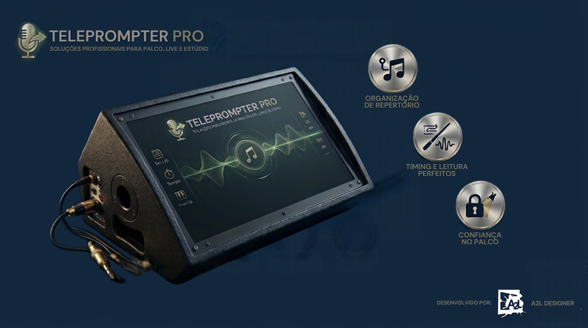

Solução completa para artistas, apresentadores e equipes de produção. Clique no botão abaixo para assistir a apresentação.
Setlist arrastável, importação de DOC/DOCX/TXT e backup completo.
Velocidade ajustável, fonte grande e timer profissional.
Modo Palco limpo, borda de segurança e tela sempre ligada.